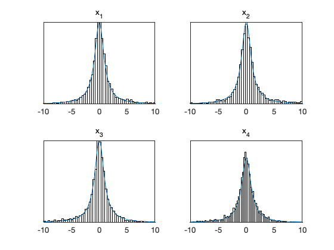
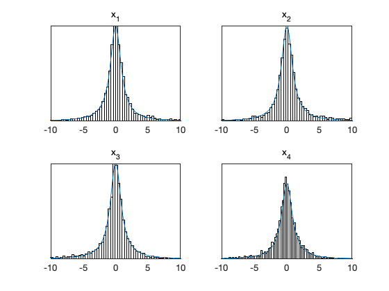

MCMC toolbox » Examples » Cauchy distribution
MCMC toolbox example
This example targets 10 dimensional Cauchy distribution. Cauchy distribution does not have finite second moment, so the AM method, which calculates chain variance will have troubles. In practice, it gives good results. Here, we use RAM adaptation, which does not use variance information (http://dx.doi.org/10.1007/s11222-011-9269-5).
clear model options params nsimu = 40000; npar = 10; model.ssfun = @(x,d) 2*sum(log(1+x.^2)); options.nsimu = nsimu; options.method = 'ram'; for i=1:npar, params{i} = {sprintf('x_{%d}',i), 0}; end [res,chain] = mcmcrun(model,[],params,options);
Sampling these parameters:
name start [min,max] N(mu,s^2)
x_{1}: 0 [-Inf,Inf] N(0,Inf)
x_{2}: 0 [-Inf,Inf] N(0,Inf)
x_{3}: 0 [-Inf,Inf] N(0,Inf)
x_{4}: 0 [-Inf,Inf] N(0,Inf)
x_{5}: 0 [-Inf,Inf] N(0,Inf)
x_{6}: 0 [-Inf,Inf] N(0,Inf)
x_{7}: 0 [-Inf,Inf] N(0,Inf)
x_{8}: 0 [-Inf,Inf] N(0,Inf)
x_{9}: 0 [-Inf,Inf] N(0,Inf)
x_{10}: 0 [-Inf,Inf] N(0,Inf)
Plot the chain
iii = 1:min(npar,4); % plot first 4 chain columns figure(1); clf mcmcplot(chain,iii,res); figure(2); clf mcmcplot(chain,iii,res,'hist'); for i=iii subplot(2,2,i) xlim([-10,10]); xx = linspace(-10,10); yy = cauchypf(xx); hold on plot(xx,yy) hold off end
 
